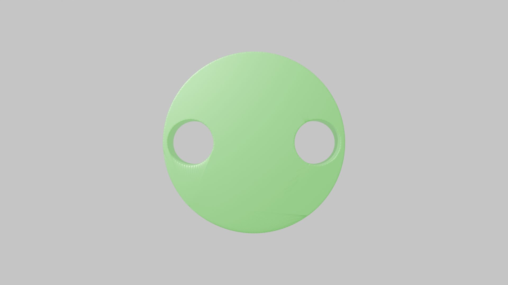
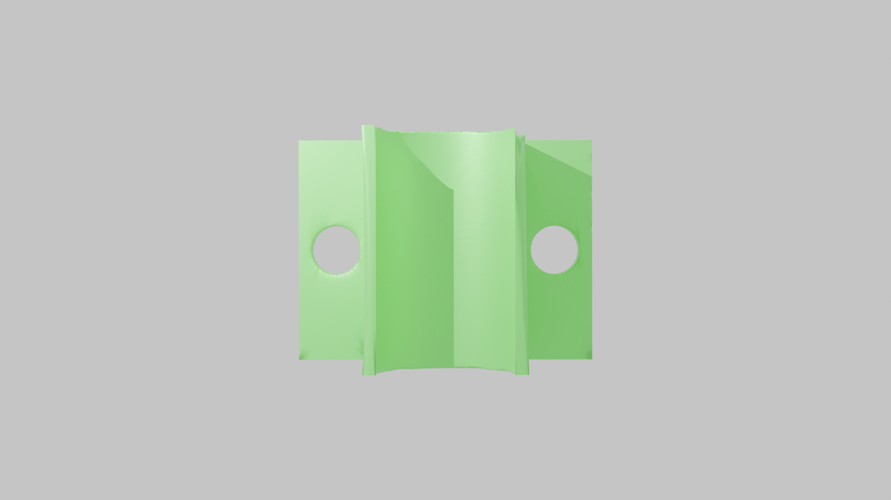

-
Q: What happens when assembly axis detection fails?
A: Axis detection leverages the semantic common-sense knowledge of VLM models, so it is possible that the detected axis is different from the user’s intended one. If the axis detection pipeline fails, the generation process will still proceed and may produce valid asset pairs for insertion tasks. However, unintended orientations may occur.
If the retrieved object is a plug and axis detection fails, the system might generate receptacles that accommodate the plug from an unintended direction. While technically valid, this may not align with common sense.
For example, a cylindrical plug is typically inserted along its height (up-down), but an incorrect axis might result in receptacles that accept the cylinder from the side, similar to how a battery is placed.
If the retrieved object is a receptacle, it may lack suitable geometry for insertion from an alternative direction.
For instance, as seen in the video above, when asset 10174 is detected for insertion from another direction, the resulting paired asset may still appear visually matched but no longer represents a valid insertion behavior.
-
Q: Does the "Contact Surface Extraction" method still work effectively in cases where the assembly object has an unsealed bottom surface (e.g., peg-gear assembly)?
A: Yes, the method remains effective.
In fact, many cases involve objects with unsealed bottoms, such as assets 10168, 10144, 10174, 10068, and 11159.
These cases are just not always rendered from an angle that makes the unsealed bottom visible.
In the images below, asset 10144, 10168, 10174 clearly demonstrates an unsealed bottom surface, confirming the method's applicability.

-
Q: Can MatchMaker be applied to multi-stage assembly?
A: Partially, the clearance-specification component of MatchMaker can be used to adapt existing multi-part assembly datasets to be simulation-compatible or to have user-specified clearances.
-
Q: The clearance is user-defined in the paper. Could a default clearance be determined automatically using LLMs/VLMs based on the assembly pair’s type and function?
A: Automatic determination of clearance is an interesting open problem. It is unclear if VLMs can accurately infer suitable clearance values from images.
For now, we focus on two criteria: simulation-compatibility and task difficulty. We want clearance as realistic as possible without simulation explosion and such that the task is learnable.
Full analysis of the interplay between clearance and task difficulty is an avenue for future work that is enabled by MatchMaker.